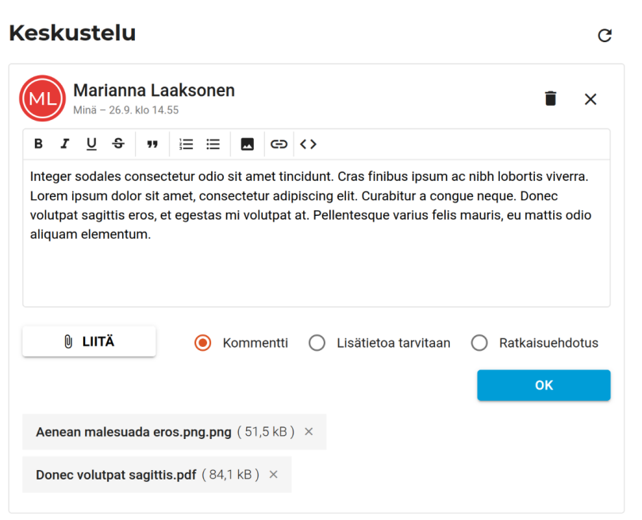

Tukki -tikettijärjestelmän frontend
English version of this document
Esittelen tässä Digivertaisverkkohankeessa toteutettua Tukki -tikettijärjestelmän frontendiä, jota olin toteuttamassa. Tein sitä 14 kk aikana. Frontend on toteutettu Angularilla, ohjelmointikielenä oli Typescript ja tyylimäärittelyissä Sass/SCSS. Tarkemman tekemäni teknisen kuvauksen voi lukea täältä. Siinä on eritelty tarkemmin käytettyjä tekniikoita ja sovelluksen arkkitehtuuria.
Sovelluksen lähdekoodi on avointa ja nähtävillä Githubissa -repossani.
Sovelluksen kuvaus
Sovellus on tarkoitettu helpottamaan korkeakouluissa ohjelmointia opettavien opettajien ja opiskelijoille välistä kommunikaatiota. Sovelluksella opiskelijat voivat esittää kurssin opettajille kysymyksiä, ja opettajat voivat vastata näihin lisäämällä kysymyksiin kommentteja.
Tekniseen tiimiin kuului minun lisäksi kaksi tiimiläistä. Keskityin seuraaviin osa-alueisiin front-endissä:
- Frontend-arkkitehtuuri
- Suuren osan toteutuksesta
- Tekninen dokumentaatio
- Lähes kaikki yksikkötestit
Muiden tiimiläisteni tekemää:
- Sovelluksen toiminnallisuus- ja käyttöliittymäsuunnittelu
- Osia frontendista: Rich text editori, UKK:n tekeminen kysymyksestä, profiilinäkymä, kysymysnäkymien lisäkentät, tietosuojaselosteen sisältö.
Projektin (front-endin) lähdekoodin koko numeroina:
| Kieli | Tiedostot | Tyhjiä | Kommentteja | Koodia |
|---|---|---|---|---|
| TypeScript | 123 | 1508 | 1854 | 10660 |
| HTML | 27 | 510 | 74 | 3179 |
| SCSS | 38 | 376 | 136 | 1766 |
| JSON | 2 | 0 | 0 | 319 |
| Yhteensä | 190 | 2394 | 2064 | 15924 |
Toteutuksen esittely
En käy läpi kaikkia järjestelmän toimintoja tai näkymiä, mutta esittelen joitain poimintoja. Sovellus on suunniteltu käytettäväksi ensisijaisesti tietokoneen näytöltä tai tablettikoosta, mutta on käytettävissä myös puhelinkoossa. Saavutettavuuteen on kiinnitetty huomiota.
Kysymysten listaus on sovelluksen päänäkymä:

Sovellus on upotettavissa Moodle -oppimisjärjestelmään, tai sitä voidaan käyttää itsenäisenä verkkosovelluksena. Yllä on jälkimmäinen näkymä. Opettajana kirjautuneena näkyvät kaikki kurssin opettajille esitetyt kysymykset. Oppilaalle näkyvät vain kaikki hänen lähettämänsä kysymykset. Kaikille ovat nähtävillä lisäksi opettajien kurssille lähettämät Usein kysytyt kysymykset.
Opettajat saavat halutessaan näkyville ratkaistuiksi asetetut kysymykset.
Sovellulksen komponenteissa on käytetty Angular Material -kirjastoa, jonka ulkonäköä on tarvittaessa muokattu. Osan komponenteissa olen tehnyt itse. Taulukon rivit voi järjestää eri sarakkeiden mukaan ja niitä voi suodattaa eri kysymysten sisältämien tietojen mukaan. Taulukon sisältö päivittyy minuutin välein tai manuaalisesti.

Sovelluksessa käytetyn kielen voi vaihtaa englanniksi. Käyttäjät voivat tarkastella käyttäjäprofiiliaan ja opettajat voivat muokata kurssin asetuksia.

Moodleen upotettuna kirjautumistieto saadaan Moodlesta. Sen ulkopuolella käytettynä kirjautuminen tehdään ensin manuaalisesti tunnuksella ja salasanalla. Kirjautumisessa käytetään monivaiheista authorization code flow:a. Sen jälkeen tunnistautuminen tapahtuu keksillä.
Yksittäisen kysymyksen näkymässä käyttäjä voi tarkastella kysymyksen tietoja. Opettaja voi kopioi kysymyksen UKK:ksi tai asettaa sen ratkaistuksi. kysymyksen lähettäjä voi poistaa tai muokata sitä. Opettajat ja opiskelija voivat lisätä kysymykseen kommentteja, jotka näkyvät kysymyksen alla. Käyttäjät voivat muokata omia kommenttejaan.

Kysymyksen ja kommentin yhteydessä näkyy lähettäjän nimi, rooli, avatar-ikoni ja kommentin lähettämis- ja muokkaamispäivämäärä.
Kommenttia muokatessa sen voi poistaa, muuttaa kommentin tai tekstin tilaa sekä lisätä tai poistaa liitteitä. Liite -komponentin tein itse. Liitteitä voi lisätä useita, ja niiden lähettäminen tapahtuu rinnakkaisesti näyttäen tiedostoille edistymispalkit. Siinä hyödynnetään observablien käytössä RxJS -kirjastoa.
Tiedostoja voi lisätä useita, ne lähetetään rinnakkain ja niiden lähetyksen tila päivitetään edistymispalkeilla. Tässä on hyödynnetty RxJS -kirjastoa.
Uuden UKK:n lisäämisen näkymä. Tässä käyttäjä on painanut “Alkuun” -nappi kesken muokkauksen, jolloin kysytään varmistusta. Lomakkeiden validointiin on käytetty Angular Reactive Forms:a.

Kurssilla olevata opettajat voivat muuttaa kurssin asetuksia, ladata ja lisätä usein kysyttyjä kysymyksiä sekä kurssin asetuksia ja kutstua ulkopuolisia osallistumaan kurssille. Lisäkenttien editointi-ikonia valitsemalla avautuu niiden muokkausnäkymä.
Lisäkenttien muokkausnäkymä. Monivalintojen lisääminen on toteutettu Angular Materialin chipseillä.